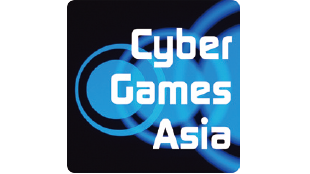

出展企業や出展タイトル、会場マップをスマートフォンで閲覧できる公式アプリ「TGSガイド」（iPhone ／iPad ／Android）が今年もご利用いただけます。展示会場に入る前にApp StoreもしくはGoogle Playから「TGSガイド」をダウンロード（１-8ホール2階の無線LANエリアなどをご利用ください）。アプリを起動して、「会場MAP」「出展社リスト」「出展タイトル一覧」を取り込んでおけば、Wi-Fiの使用が禁止されている1-6ホールでも、オフラインで検索機能を使ってブース位置などが確認できます。なお、アクセスが集中した場合、ダウンロードしにくくなる場合がありますので、時間をおいて改めて試みてください。
デジタルサイネージは、大規模出展社13 社が発表する試遊待ち時間や配布物情報のほか、TGS 事務局からのお知らせを表示しています。１画面に４社の情報を掲載し、15秒ごとに切り替わっていきます。設置場所は全10 カ所で、西駐車場の当日券売り場付近、一般展示会場のホール間、7 ホール物販コーナーの再入場口付近、9 ホールの入出口付近にあります。気になるブースの状況を事前にチェックして、効率的に会場を回ろう。
表示対象出展社（50音順）
WARGAMING JAPAN、エレクトロニック・アーツ、カプコン、グリー、コーエーテクモゲームス、コナミデジタルエンタテインメント、スクウェア・エニックス、セガ、ソニー・コンピュータエンタテインメント、DMM ゲームズ、日本マイクロソフト、バンダイナムコゲームス、ブシロード
TGSでは展示会場1-6ホール内では無線LANの使用を禁止しています。それにともない、2階コンコースにTGS専用の無線LANエリア（無料）を3カ所設置します（ビジネスデイは２カ所）。併せて、幕張メッセによる「Makuhari Free Wi-Fi」サービス（無料）も1-8ホールおよび9ホールの２階コンコース（全域）でご利用いただけます。無線LANでの通信をする場合はいったん展示会場を出て、2階の無線LANエリアにお越しください。また、待ち合わせに便利な「すれちがい通信＆対戦ゲーム広場」（4ホール2階＝赤の広場／7ホール2階＝青の広場）も用意いたしましたので（各色のカーペットが敷いてあります）、ぜひご利用ください。

東京ゲームショウ2014では、「TGSフォーラム2014基調講演」から「Cosplay Collection Night @TGS」、eスポーツ競技会「Cyber Games Asia」まで、会場からインターネットライブ配信を行う「公式動画チャンネル」を開設。動画配信メディアパートナーの「niconico（ニコニコ）」が番組を制作・運営します。ぜひご覧ください！

１日中、広い東京ゲームショウ会場を見て回っていると、携帯電話やスマートフォンの電池が心許なくなっているはず。そんなときに役立つのが無料の携帯電話充電コーナー（3ホール北）。NTTドコモが実施するこのブースでは、フィーチャーフォンからスマホまで様々な携帯電話の充電サービスが無料で受けられます。
今年で3回目となるeスポーツゲーム競技会「Cyber GamesAsia」は、9ホールの特設会場にて開催します。eスポーツとは、主に対戦型ビデオゲームを用いた競技のことで、プレーヤーの行動をデジタル化して、コンピューター上で競技するという、情報化社会に生まれた新しいスポーツです。eスポーツには競技性が高いゲームが用いられ、反射神経や高度な操作、素早い状況判断、チームの高度な連携など、様々な能力やスキルが要求されるため、スポーツの一つとして、世界で幅広い世代に楽しまれています。「Cyber Games Asia」は、日本を含むアジアの各地域からトップ選手やチームを招へいし、彼らによる、レベルの高いゲームプレーを観戦していただけます。

今年の飲食コーナーは9ホール（一般公開日のみ）に設けました。ゆったり座って食べられるベンチシートをご用意。今年から登場したゲームコラボメニューから東北をはじめとする全国ご当地グルメまで、多彩なメニューをそろえています。東京ゲームショウならではの食事を、ぜひお楽しみください。 なおドリンクコーナーは、ビジネスデイを含めて2ホール北に設置。インターナショナルラウンジ内でもドリンクをご購入いただけます。
「ゲーム歴史博物館」は、家庭用ゲーム機の誕生から現在までのゲーム業界の歴史を、株価や為替、流行語やヒット曲など時事情報とともにたどるパネル展示です。歴代の日本ゲーム大賞受賞作品やゲームハードのリリース情報も掲載されているので、ゲームがどのように進化してきたかを世相とともに理解できます。ゲームの歴史に興味がある人は９ホールのブースに足を運んでみてください。
一般公開日の2日間＜9/20（土）、21（日）＞は、9ホールの特設会場にて大抽選会を実施します。抽選で当たりが出ると、お好きな品を１点差し上げます。出展社の人気配布物が当たるチャンス！ ぜひ、ご参加ください。
| 日 時 | 9月20日（土）10:00～16:30（最終受付 16：15） 9月21日（日）10:00～16:30（最終受付 16：15） |
|---|---|
| 会 場 | 9ホール TGS大抽選会場 |
| 抽選方法 | ガラガラ抽選機を回し、当たりが出ると１点、お好きな景品を選択することができます。はずれの場合でも、記念品をプレゼント！ ※抽選に参加できるのはお一人様１回までです。（※ダブルチャンスあり） ※抽選順により、ご希望の品物がなくなる場合がございます。 ダブルチャンス 日本ゲーム大賞 フューチャー部門の投票者には大抽選会で2 回抽選できる「大抽選会Wチャンス券」を配布します。 |
一般公開日に、9ホールの一部と屋外、および、4-6ホールの屋外南側（海側）にコスプレエリアを設けます。コスプレエリアでは、様々なゲームキャラクターにふんしたコスプレイヤーに会うことができます。コスプレエリアまでぜひ足をお運びください。
世界中からの来場者を迎える東京ゲームショウ。そんな彼らにクールな日本文化を知ってもらうための「インターナショナルラウンジ」を設けます（2ホール北）。この企画を、昨年に続き、日本のポップカルチャーを海外に情報発信する「Tokyo Otaku Mode（TOM）」とコラボレーション。今年は、ゲーム業界を描いた人気マンガ『大東京トイボックス』をフィーチャーした「大東京トイボックス展」を開催。ファン必見の描き下ろし短編のほか、『東京トイボックス0』の冒頭を英訳し、日本語版とともにパネル展示します。また、TOMのスペシャルクリエイターによる、ゲームをテーマにしたクリエイティブも展示します。

日本最大のコスプレコミュニティサイト「Cure」がお届けするステージショウ「Cosplay Collection Night」が、9月20日18時30分より、8ホール「イベントステージ」で開催されます。コスプレでのパフォーマンス、ファッションショウ、マイクパフォーマンスなど、新しいコスプレの魅力をお楽しみいただけます。ステージには、日本や世界で活躍するカリスマコスプレイヤーが勢ぞろい。ご存じのキャラクターからレアなキャラクターのコスプレまで見応えのある90分。新感覚のコスプレショウをぜひご覧ください。
TGS2014オフィシャルドリンク・スポンサーのモンスターエナジーは、2002年にアメリカで発売して以来、全世界90以上の国と地域で販売しているエナジードリンク。モータースポーツ、アクションスポーツ、音楽シーンのみならず、ゲームシーンにもワールドワイドで積極的なサポートを行っています。当ブース（4ホール北）では、モンスターエナジー、モンスターエナジーアブソリュートリーゼロのサンプリングと、もれなくグッズが当たるFacebookキャンペーンを実施中！ 歩き回って疲れた体に、エナジーチャージしに来ない？
TGS2014公式グッズは、今年も、Tシャツやタオル、トートバッグなど、形部一平氏が描いたメインビジュアルを基にデザイン。そのほか、ワークキャップやマウスパッド、マグカップなど計17アイテムをそろえました。さらに昨年大好評だったコラボTシャツも登場。日本のポップカルチャーを世界に発信するTokyo Otaku Mode（TOM）と、ゲーム業界を描く人気マンガ『大東京トイボックス』とコラボレーションしました。TGS2014公式グッズ販売コーナーは、7ホールの物販コーナーほか、2Fコンコース5ホール前、屋外中央広場、9ホールにあります。ぜひ、お立ち寄りください。
一般公開日の２日間（20日～21日）、「東日本大震災復興支援チャリティーオークション」が8ホールイベントステージで開催。出展社、CESA会員企業が提供したレアアイテムが出品されます。3ホールにある「日本ゲーム大賞」ブース内に展示していますので、ぜひチェックしてください。また、東日本大震災復興支援の募金箱を日本ゲーム大賞投票所（9カ所）の近くに設置しています。皆様のご協力をよろしくお願いいたします。
東京ゲームショウ2014では昨年に引き続き、一般公開日に幕張イベントホールでライブイベントを開催。今年はプロジェクトの新たな発表が行われる『ミルキィホームズ』が、9月20日（土）に『ミルキィホームズファーストライブ（にかいめ！）～Welcome to Second Stage ～』を実施します。新規プロジェクトの発表と、その幕開けのライブは必見。TGS2014展示会場内のブースとイベントホールの両方でお楽しみください。当日券はイベントホール前広場にて販売予定です。
| 開催日時 | 2014年9月20日（土） 開場 17:30 開演 18:30 |
|---|---|
| 出 演 | ミルキィホームズ／フェザーズ |
| 会 場 | 幕張イベントホール |
| 主 催 | ブシロード |
| 企 画 | ブシロードメディア |
| 協 賛 | ブシロードミュージック |
| 制 作 | バンダイナムコライブクリエイティブ |
| 協 力 | 東京ゲームショウ2014 |
| チケット | 当日券8700円（税込） ※TGS2014入場券を含む ※全席指定 |
| グッズ販売に ついて |
グッズの購入を希望される方の最初の並び順は、抽選で決めさせていただきます。抽選券を11時30分よりイベントホール前広場にて配布しますので、物販の開始時間に合わせて、抽選で決まった番号順にお並びください。 抽選券配布時間：9月20日（土）11：30 グッズ販売開始時間：9月20日（土）12：30頃 集合場所：イベントホール前広場 ※終演後は30分ほどグッズ販売を予定 ※TGS2014のブシロード物販ブース（7ホール）でもグッズの取り扱いを予定しています。 ※上記の抽選券配布時間が変更になる場合があります。 詳細は、ミルキィホームズユニット公式サイト（http://milky-holmes-unit.com  ）をご覧ください。 ）をご覧ください。 |

2002-2014 CESA / Nikkei Business Publications, Inc. All rights reserved.